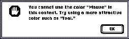

|
Stop Alert BoxesThe stop alert box is the third, and most severe, level of alert box. The stop alert box icon is the hexagon with an open hand, which resembles a stop sign in some locales. (If this icon is offensive in a region or country where you want to market your application, make sure you replace it with a more appropriate stop icon when you localize your application.) Stop alert boxes notify the user that an action cannot be completed. Stop alert boxes typically have only one button, the OK button. As with the note alert box, the user can only acknowledge the warning and dismiss the alert box. Figure 6-20 shows an example of a stop alert box.Figure 6-20 An example of a stop alert box  Use stop alert boxes when the user tries to complete an action that is impossible in the current context. |